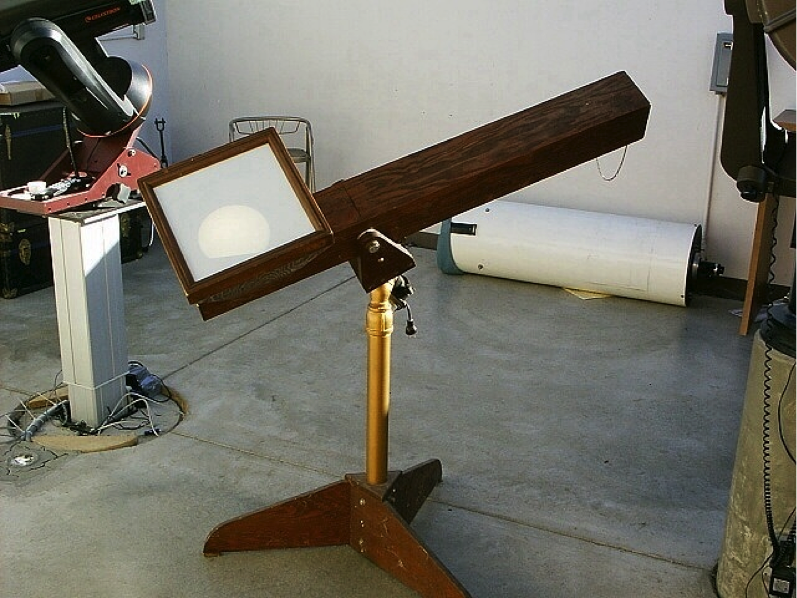

Programs last about 20 minutes with 20 minutes pauses in between so patrons can look through the telescopes between programs. Usually two programs are shown alternating throughout the evening. One of the programs is always a slideshow about the current season's constellations
Our largest telescope is the C14, a 14 inch aperture f/11 Schmidt-Cassegrain telescope produced by Celestron. The vintage 1976 telescope is mounted on the original fork with a Byers drive system in the base. The telescope can be moved with a push of a button to scan around local regions of the sky, or just unlocked and moved by hand from object to object. The instrument is ideal for high-power views of the moon and planets, as well as for viewing double stars and many faint deep-sky objects like star clusters, planetary nebulae, and even a few galaxies. The telescope has also been used for Astronomy class work and astrophotography.
Our second-largest instrument is the 11 inch aperture f/10 NexStar GPS-XLT Schmidt-Cassegrain telescope made by Celestron. It is a “Go-to” instrument which, with only a few button pushes, will automatically slew to and track a large number of objects from its internal database. Its fine optics and ability to quickly locate and show faint or difficult objects in the light pollution of Lincoln make it a favorite with both the public and with our telescope operators. The telescope can also be remotely controlled via a computer, and is also used for live TV feeds to the main lecture hall as well as to a monitor on the observing deck. The instrument is also fixed to a Pier-Tech variable height pier which allows people of nearly all heights to view through the telescope comfortably.
Our third-largest instrument is our Eight inch aperture f/6 Newtonian reflector telescope, built by members of the Prairie Astronomy Club and donated to the observatory. It is designed for wider-field views of deep-sky objects, but performs very well on the moon and planets as well. Much of the instrument’s design and construction was done by optical and mechanical engineer Larry Stepp (former president of the club), who is now involved in designing and building some of the largest telescopes in the world. The telescope was dedicated to professor Carroll Moore, without whom Hyde would not exist.
Hyde’s Solar Telescope is a safe and unique three inch rear-projection refractor solar telescope designed and built by members of the Prairie Astronomy Club and funded via a donation from the Junior League of Lincoln. The fully-enclosed optical system and Lexan-protected rear projection screen allow several people to view the surface of the sun at the same time, both safely and effectively. The solar telescope is used mainly for daytime school groups or for major events like solar eclipses and transits. It has been used off of the observatory grounds for special events, but usually remains on the observing deck most of the time. In addition to these telescopes, members of the Prairie Astronomy Club will often set up their own telescopes outside on the lawn to the southwest of the observing deck for classes or for special events to accommodate larger crowds.